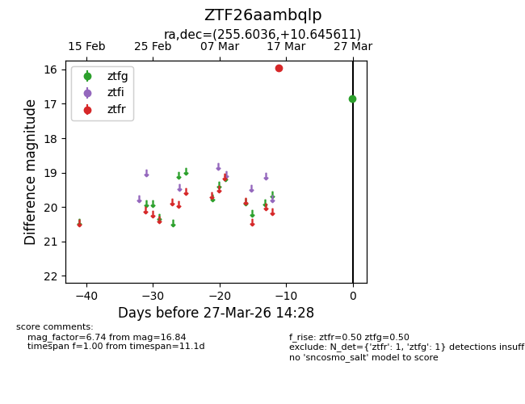
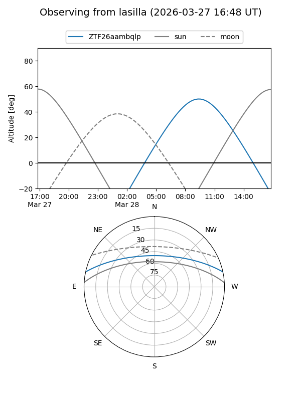
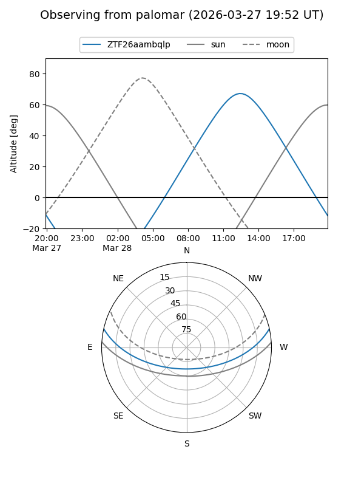

ZTF26aambqlp
Target ZTF26aambqlp at 2026-03-27 14:31
Aliases and brokers:
FINK: link
Lasair: link
ALeRCE: link
alt names
ZTF26aambqlp (ztf,fink_ztf)
Coordinates:
equatorial (ra, dec) = 255.6036,+10.64561
equatorial (HMS+DMS) = 17:02:24.88,+10:38:44.20
galactic (l, b) = (30.2569,+28.99959)
Flags:
Photometry:
last ztfg=16.84, ztfr=15.95
1 ztfg, 1 ztfr detections
Lightcurve

Visibility


Additional plots